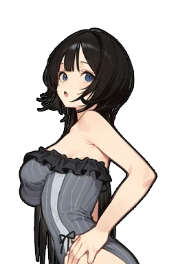

JUNIOR CUP
ジュニアトーナメント — U-20
第9回大会 / 4名トーナメント
▲ Climb to the top — 勝ち上がるほど上へ

澤出みずき
第9回大会ジュニアチャンピオン
1.6秒で自動的に進みます(タップで即スキップ)
決勝
澤出みずき WIN
VS

岩屋みら
16:40/MQ 86
準決勝
澤出みずき WIN

副沢たまき
12:05/MQ 74

宮守なつめ
岩屋みら WIN
14:22/MQ 79
準決勝
76px (提案)
76px (提案)
準決勝
112px (現行)
112px (現行)
決勝
132px
132px
頂上
150×225
150×225
現行との差分
・準決勝のサイズを
・頂上ブロックの「タップして結果を見る ▶」の点滅小文字を、大会色(--ev-summer)の大きなCTAボタン「表彰へ ▶」に変更 + 「1.6秒で自動的に進みます」の注記を追加。実装は既にコード側で対応済み(
・大会色は夏(
・勝者=大会色下ボーダー/敗者=モノクロ、決着時間/MQチップ、合流線(chevron)は現行の
・準決勝のサイズを
jtc-size-md(112px) → jtc-size-sm(76px) に変更(_jtcSizeClass() の JT向け分岐追加)。決勝 jtc-size-lg(132px)・頂上 jtc-up-peak(150×225) は現行そのまま流用。
4名大会は段が2つしかないため、天頂戦(16名・準決勝md→決勝lg)よりも段差を強めに付けないと「せり上がった感」が出ない — これが Keisuke 指摘の「サイズ差が弱い」の根本原因・頂上ブロックの「タップして結果を見る ▶」の点滅小文字を、大会色(--ev-summer)の大きなCTAボタン「表彰へ ▶」に変更 + 「1.6秒で自動的に進みます」の注記を追加。実装は既にコード側で対応済み(
App._jtPeakTimer・本モック作成と同時に app.js/ui-common.js を修正)・大会色は夏(
--ev-summer 青)を維持。ヘッダーは現行JT(emblem-summer.png + JUNIOR CUP)をそのまま踏襲・勝者=大会色下ボーダー/敗者=モノクロ、決着時間/MQチップ、合流線(chevron)は現行の
jtc-up / jtc-minfo / jtc-merge 系をそのまま流用